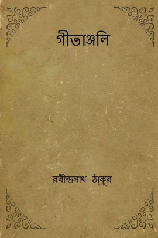

Rabindranath Tagore was a legendary Indian poet. He was also a great philosopher, patriot, painter, and humanist. People often made use of the word Gurudev with regard to him. This exceptional personality was born on the 7th of May in 1861 at Calcutta. Rabindranath Tagore began writing poems from a very young age. Rabindranath Tagore began to write drama from sixteen years of age. At the age of twenty, Rabindranath Tagore wrote original dramatic piece Valmiki Pratibha. Most noteworthy, Rabindranath Tagore works focused on feelings and not on action. In 1890 he wrote another drama work Visarjan. It is considered to be the best drama work of Rabindranath Tagore. Similarly, from the age of sixteen Rabindranath Tagore began to write short stories. His first short story was Bhikarini. Most noteworthy, he is the founder of the Bengali-language short story genre. Tagore certainly wrote numerous stories from 1891 to 1895. Also, stories from this period form the collection of Galpaguchchha. It is a big collection of 84 stories.
Rabindranath Tagore was certainly in touch with novels as well. He wrote eight notable novels. Furthermore, he wrote four novellas. The best collection of poetry of Rabindranath Tagore is Gitanjali. Most noteworthy, Rabindranath Tagore received the Nobel Prize in 1913 for Gitanjali. Furthermore, his other important poetry works are Manasi, Sonar Tori, and Balaka. Rabindranath Tagore was certainly not short on songs. The man enjoys the reputation of writing a mighty 2230 songs. The popular name in usage is rabindrasangit, which refers to Tagore’s songs. His songs certainly reflect Indian culture. His famous song Amar Shonar Bangla is the national anthem of Bangladesh. Above all, he wrote the national anthem of India Jana Gana Mana. Rabindranath Tagore also had excellent skills in drawing and painting. Probably, Rabindranath Tagore was red-green color blind. Due to this, his artworks contain strange color themes.
Rabindranath Tagore was active in politics as well. He was in total support of Indian nationalists. Furthermore, he was in opposition to British rule. His work Manast contains his political views. He also wrote a number of patriotic songs. Rabindranath Tagore increased the motivation for Indian independence. He wrote some works for patriotism. There was great love among the masses for such works. Even Mahatma Gandhi showed his favor for these works. Most noteworthy, Rabindranath Tagore did renunciation of his knighthood. Furthermore, he took this step to protest the Jallianwala Bagh massacre in 1919.
In conclusion, Rabindranath was a patriotic Indian. He was certainly a man of many talents. His contribution to Literature, arts, music, and politics is brilliant. Ravindranath Tagore was a great lover of his country, of humanity, and children in particular. Tagore believed in non-violence and rejected traditionalism as much as western chauvinism.